CH1 计算机系统结构导论
翻译：先用转换程序将高一级机器级上的程序整个地变换成低一级机器级上等效的程序，然后再在低一级机器级上实现的技术。
解释：在低级机器级上用它的一串语句或指令来仿真高级机器级上的一条语句或指令的功能，是通过对高级的机器级语言程序中的每条语句或指令逐条解释来实现的技术。
计算机系统结构、计算机组成、计算机实现所包含的内容（选择）；
- 计算机系统结构包含：
- 数据表示
- 硬件能直接识别和处理的数据类型、格式
- 寻址方式
- 最小寻址单位，寻址方式的种类，地址的计算
- 寄存器组织
- 数据寄存器、变址、控制寄存器、专用寄存器等数量，使用方法
- 指令系统
- 指令的格式、类型，使用方法
- 存储系统
- 最小编址单位，编址方式，存储容量，最大存储空间
- 中断系统
- 中断类型，优先级别，入口地址的形成
- I/O 接口的结构
- I/O 的连接方式、访问方式、编址方式
- 信息的保护
- 保护方式，硬件对信息的保护和支持
- 机器工作状态、定义和切换
- 数据表示
- 计算机组成包含：
- 数据通路宽度
- 专用部件的设置
- 各种操作对部件的共享程度
- 功能部件的并行度
- 控制机构的组成方式
- 缓冲和排队技术
- 可靠性技术
- 计算机实现包含：
- 处理机、主存、I/O 接口等部件的物理结构
- 器件的集成度和速度的选择
- 器件、模块、插件、底板的划分与连接
- 专用器件的设计
- 组装技术
- 信号传输
- 电源、冷却、整机的装配等
计算机系统设计思路（填空、选择）；
- 由上往下
- 从使用者面向的机器级开始设计；
- 适用于专用机的设计。
- 由下往上
- 不管要求、应用需要，只根据现有能得到的器件，构成系统。再配合不同的应用需要，加入操作系统、高级语言等。
- 硬件、软件设计会产生脱节，硬件会过于繁杂，造成浪费。
- 由中间开始
- 首先进行软硬件功能分工，确定交界面，再分别向上、下进行设计
系列机和兼容机的概念（选择、填空）；
- 系列机：同一厂家生产的具有相同计算机结构，但具有不同组成和实现的一系列不同档次不同型号的机器；
- 兼容机：不同厂家生产的具有相同计算机结构的计算机。
计算机系统设计步骤（选择、填空）；
- 设计任务：分配软、硬件的功能，确定机器级的界面，并对该界面进行具体确切的定义。
- 设计步骤：
- 需求分析
- 需求说明
- 概念性设计
- 具体设计
- 反复进行优化设计及评价
计算机的层次结构（选择）； 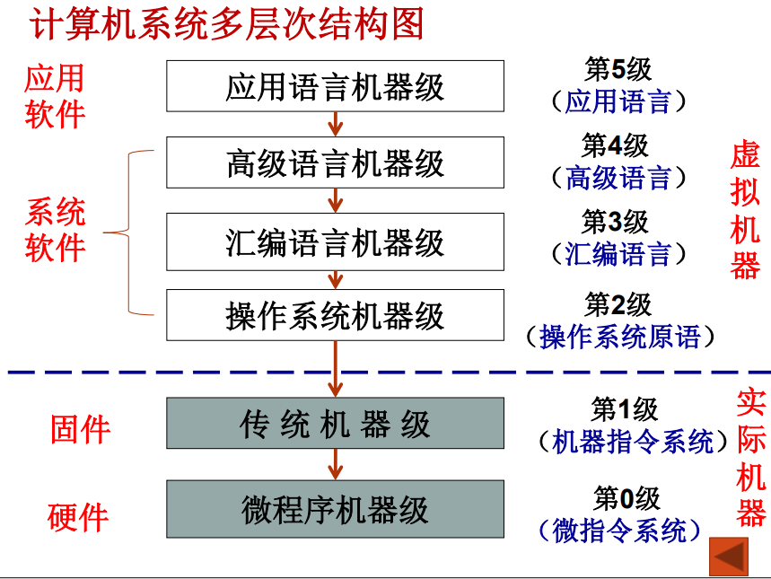 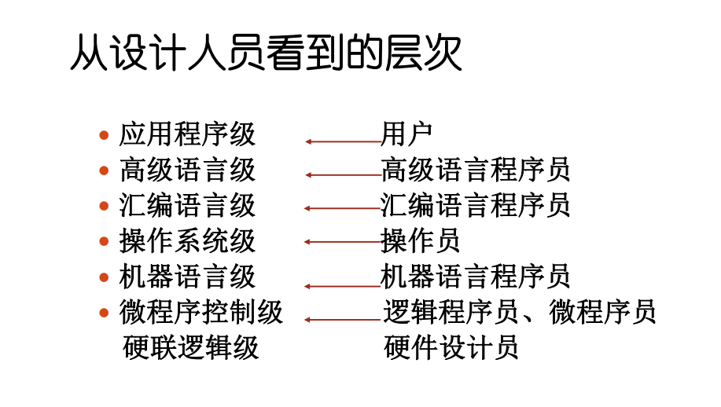
计算机系统结构的定义（实质）（选择）；
- 系统结构就是要研究对于某级，哪些属性应该透明，哪些属性不应该透明。更本质地说，系统结构就是某一语言程序员在对应的机器级上能够编写正确运行的程序所必须了解的所有计算机属性的集合。
- 计算机系统结构的实质是完成硬件、软件的功能分配, 对计算机的机器级界面的确定。
- 界面之上，是软件实现的功能；界面之下是硬件和固件实现的功能。
计算机系统结构、计算机组成、计算机实现三者之间的区别和联系（简答、选择）；
- 计算机系统结构----系统设计（对计算机系统中各机器级之间界面的划分和定义，以及对各级界面上、下的功能进行分配） 计算机组成----逻辑设计（计算机系统结构的逻辑设计） 计算机实现----物理设计（计算机组成的物理实现）
- 相同系统结构的计算机可以采用不同的组成；相同组成的计算机可以采用不同的实现技术。
- 组成设计向上决定于结构，向下受限于实现技术
- 结构不同，采用的组成技术不同；
- 组成技术的进步推动结构的发展；
- 实现技术的发展使得三者的关系更加紧密
- 例如：计算机指令系统中
- 指令系统的确定-计算机系统结构
- 指令的实现-计算机组成
- 指令实现的具体电路-计算机实现
软、硬件取舍原则（简答、选择）；
- 应考虑现有硬件、器件（主要是逻辑器件和存储器件）条件下，系统要有高的性能价格比，主要从实现费用、速度和其他性能要求来综合考虑
- 考虑到准备采用和可能采用的组成技术，使它尽可能不要过多或不合理地限制各种组成、实现技术的采用
- 不能仅从"硬"的硬的角度考虑如何便于应用组成技术的成果和便于发挥器件技术的进展，还应从“软”的角度把如何为编译和操作系统的实现以及如何为高级语言程序的设计提供更多、更好的硬件支持放在首位
- 以下四点不重要：
- 考虑用户的应用领域：专用—硬件
- 设计周期长的硬件不宜采用
- 常用的功能尽量采用硬件实现
- 尽量采用新技术实现超前设计
解决软件可移植性的方法（选择、填空）；
- 是指软件不用修改或只需经少量加工就能由一台机器搬到另一台机器上运行，使得同一套软件可以应用于不同的硬件环境。
- 几个基本技术：
- 统一高级语言
- 采用系列机思想：按照统一系统结构设计（“从中间开始”设计）
- 机器的属性相同
- 软件的兼容性：
- 做到向后兼容（之后开发的）（软件兼容的根本特征，系列及的基本特征）
- 力争向上兼容（档次更高的）
- 模拟与仿真
- 不同系统结构的机器之间的机器语言软件移植即在一种机器的系统结构上实现另一种机器的系统结构
- 最重要：实现指令系统（机器语言）
- 模拟：用机器语言解释，实现程序移植
- 存在主存中
- 仿真：用机器中微程序控制的方法解释另一台机器的指令系统
- 存在控制寄存器中
透明性的定义和判断（选择）；
在计算机中，客观存在的事物或属性从某个角度看不到，称这些事物或属性对它是透明的。
CPU 性能公式；
- 取决于3个因素：
- 程序执行的总执行条数
- 平均每条指令的时钟周期数
- 主时钟频率
- 为第 种指令的时钟周期数， 为第 种指令在程序中出现的次数
- CPU的程序执行时间
- MIPS(Million Instructions Per Second，每秒百万条指令数)。
- MIPS 依赖于指令系统，对指令系统不同的机器不准确；2.同一机器上，MIPS因程序不同而变化，有时差距很大
- MFLOPS(Million Floating Point Operations Per Second，每秒百万次浮点运算)。
Amdahl 定律（计算）；
- 性能可改进比 ：系统性能可改进部分占用的时间与未改进时系统总执行时间的比值
- 部件加速比 ：系统性能可改进部分再改进后性能提高的比值
- 系统加速比
三大定量分析原理（填空、简答）；
- 哈夫曼压缩原理：尽可能加速高概率事件远比加速处理概率很低的事件对性能提高要显著
- Amdahl定律：该定律用于确定系统中某一部件采取措施提高速度后能得到系统性能改进的程度，即系统性能加速比 。
- 程序访问的局部性定律：存储器体系的构成就是以访问的局部性原理为基础的
时间局部性：程序中近期被访问的信息项很可能马上将被再次访问
空间局部性：指那些在访问地址上相邻近的信息项很可能会被一起访问
并行性的概念和分类（简答、选择、填空）；
- 只要在同一时刻或是在同一时间间隔内完成两种或两种以上性质相同或不同的工作，它们在时间上能互相重叠。
- 同时性：两个或多个事件在同一时刻发生。
- 并发性：两个或多个事件在同一时间间隔内发生。
- 从计算机系统执行程序角度来看，从低到高分为：
- 指令内部—微操作之间—硬件和组成技术
- 指令之间—多条指令并行执行—相关问题
- 任务或进程之间—任务或程序段—任务分解
- 作业或程序之间—作业或多道程序—并行算法
- 从处理数据的角度来看，从低到高分为：
- 位串字串
- 位并字串
- 位串字并
- 位并字并（全并行）
- 从计算机信息加工的各个步骤和阶段来看：
- 存储器操作并行
- 处理机操作步骤并行
- 处理器操作并行
- 指令、任务、作业并行
Flynn 分类（选择、填空）；
- 指令流是指机器执行的指令序列。
- 数据流是指由指令流调用的数据序列。
- SISD：单指令流单数据流
- SIMD：单指令流多数据流
- MISD：多指令流单数据流
- MIMD：多指令流多数据流
系统结构中开发并行性的途径（填空、选择、简答）
- 时间重叠。
- 时间重叠是指在并行性概念中引入时间因素，让多个处理过程在时间上相互错开，轮流重叠地使用同一套硬件设备的各个部分，加快硬件周转来赢得速度。
- 例子：流水线计算机。
- 资源重复。
- 资源重复是指在并行概念中引入空间因素，通过重复设置硬件资源来提高可靠性或性能。
- 例子：阵列处理机。
- 资源共享。
- 资源共享是指用软件方法让多个用户按一定时间顺序轮流使用同一套资源来提高资源的利用率
- 例子：多处理机系统。
耦合度（填空、选择）
反映多机系统中各机器之间物理连接的紧密程度和交叉作用能力的强弱
- 最低耦合：仅通过中间存储介质相互通信。各机器间并无物理连接，也无共享的联机硬件资源。(USB)
- 松散耦合： 通过通道或通信线路实现互连。共享某些外围设备，以较低频带在文件或数据集合一级进行相互通信。
- 紧密耦合： 通过总线或高速开关实现互连。共享主存，有较高的信息传输速率 ，实现数据传输的吞吐量大，高效。
CH2 指令系统
指令系统的优化设计的两个截然相反的方向；
- CISC 复杂指令系统 （硬件实现多）
- 主要改进方向
- 面向目标程序
- 面向高级语言和编译
- 面向操作系统
- 主要改进方向
- RISC 精简指令系统
RISC 的基本原则和快的实质（简答、选择）；
- 基本原则
- 选择使用频度较高、最有用，及实现简单的指令；
- 每条指令都在一个机器周期内完成的指令；
- 减少指令寻址方式的种类，简化指令格式，使指令的长度相同；
- 增加通用寄存器的数量，减少访问存储器操作；
- 大量采用硬联控制，提高执行速度
- 通过优化和精简指令设计支持的编译程序，能有效地为高级语言生成机器语言程序。
- 快的实质
- （关键）CPI，RISC比CISC少2-10倍
RISC 采用的基本技术（简答、选择）；
- 遵循按RISC机器一般原则设计的技术。
- 在逻辑上采用硬联实现和微程序固件实现相结合的技术。大多数简单指令用硬连线方式实现，功能较复杂的指令用微程序解释实现。
- 在CPU中设置数量较大的寄存器组，并采用重叠寄存器窗口的技术。
重叠寄存器窗口（选择）


- 效果：大量减少了原先由于程序调用引起的访存的次数
- 在主存中开辟堆栈，当调用的进程数（层数）超过规定层数时（寄存器溢出），则将溢出的部分压入堆栈中
- SUN公司的SPARC、SuperSPARC等处理机，将最后一个过程与第一个过程的公用存储器重叠起来，从而形成一个循环圈
CH3 标量处理机
重叠和顺序解释的异同（简答、选择）；
- 顺序解释
- 各条机器指令之间顺序串行地执行，执行完一条指令后采取出下条指令来执行，而且每条指令内部的各个微操作也是顺序串行地执行。
- 特点
- 控制简单
- 速度慢、各部件利用率低
- 重叠解释
- 在解释第 k 条指令的操作完成之前，就可开始解释第 k+1 条指令
- 相同：每一条指令的实现速度相同
- 不同：重叠解释能加快相邻两条以至一段程序的解释
重叠和流水概念及工作原理（选择）；
- 流水的概念：流水是重叠的引申，在一个任务完成以前就可以开始一个新的任务。
- 将指令分成更多的子过程，可同时解释多条指令，是多条指令的重叠处理，是更高程度的重叠。
一次重叠、二次重叠的概念（选择）；
- 一次重叠：在任何时刻，指令分析部件和指令执行部件止只有相邻两条指令在重叠解释的方式。
- 二次重叠：同时解释3条指令
重叠对组成的要求（简答、选择）；
- 解决可能存在的访存冲突
- 原因：一般的机器上，操作数和指令混存于同一主存内，取指需要访主存，分析中取操作数也可能访主存。而一次只能访问一个主存单元。
- 解决方法：
- 操作数和指令分存于两个独立编址且可同时访问的存储器
- 采用多体交叉主存结构
- 增设指令缓冲寄存器（如果每次都可以从指缓中取得指令，则“取指k+1”的时间很短，就可把这个微操作合并到“分析k+1”内，则可将原先的重叠变成只是“分析k+1”与“执行k”的重叠）
- 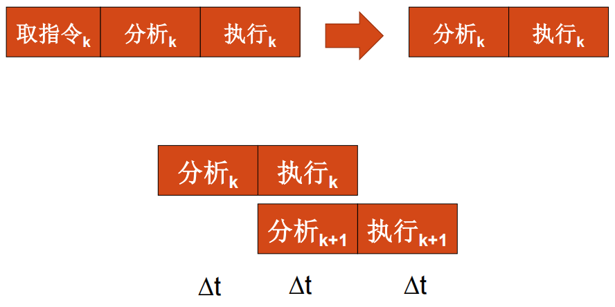
- 在硬件上保证有独立的指令分析部件和指令执行部件；
- 处理机需要有独立的取指令部件、分析指令部件、执行指令部件。
- 解决控制的同步
- 保证任何时候只是“分析k+1”与“执行k”的重叠
- 转移指令的处理问题
- 原因：条件转移成功时，重叠实际变成了顺序
- 解决方法：
- 采用重叠方式的机器中，应尽量减少使用条件转移语句。
- 若出现条件转移语句，可使用延迟转移技术等（如将第k条转移指令与条件转移无关的第k-1条指令交换位置）
重叠相关的两种解决方案并就其原因用系统设计原理作出解释（选择、填空、简答）；
- 原因：因为机器语言程序中临近指令之间出现了关联，为防止出错让它们不能同时解释的现象就称为发生了“相关”。（如：当后继指令的操作数刚好是前一指令的运算结果）
- 指令相关：后一指令的内容受前一指令的执行结果影响而产生的关联
- 处理：
- 程序运行过程中不允许修改指令；
- 设置一条“执行”指令，将指令相关转化成操作数相关来解决
- 处理：
- 操作数相关：两条指令的数据有了关联
- 主存空间数相关：相邻两条指令之间出现对主存同一单元要求先写入后读出的关联。
- 处理：推后读（具体方法：由存控给读数、写数申请安排不同的访存优先级来解决，只要将写数级别安排成高于读数级别，则自动实现了推后读）
- 通用寄存器空间数相关：当程序执行过程中出现L1（k+1）=L3（k）时就发生了L1相关；而当L2（k+1）=L3（k）时就发生了L2相关。
- 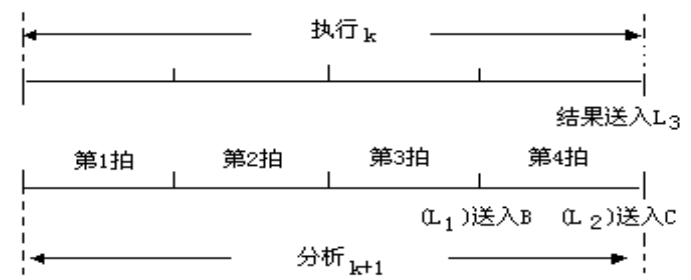
- 处理：
- 推后读（推后到“执行k”结束或推后到“执行k”把结果送入L3）（牺牲速度来避免相关出错）
- 增设相关专用通路（以增加设备为代价，重叠效率不下降）（仅用于通用寄存器空间数相关，因为主存空间数相关的出现概率低）
- 处理：
- 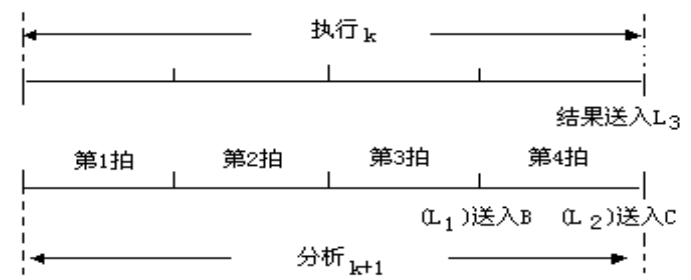
- 主存空间数相关：相邻两条指令之间出现对主存同一单元要求先写入后读出的关联。
- 指令相关：后一指令的内容受前一指令的执行结果影响而产生的关联
几种相关的判断及解决方法（选择、填空）； 同上
流水线分类（选择、填空）
- 根据向下扩展和向上扩展分类
- 向下扩展：把子过程进一步细分
- 向上扩展：在多个处理机之间进行流水
- 按流水处理的级别不同
- 部件级流水：构成部件内的各个子部件之间的流水，如运算器内浮点加法流水线。
- 处理机级流水：指构成处理机的各个部件的流水，如“取指”、“分析”、“执行”间的流水。
- 系统级流水：构成计算机系统的多个处理机之间的流水，也称为宏流水。
- 按功能分类
- 单功能流水线：只能完成一种固定功能。
- 多功能流水线：流水线的各段通过不同的连接实现不同的功能
- 按工作方式分类
- 静态流水线：某一时间内各段只能按一种功能连接流水，只有等流水线全部流空后，才能切换成按另一种功能连接流水。
- 动态流水线：允许在同一时间内各段按不同运算或功能连接。
- 动态流水线必是多功能流水线，单功能流水线必是静态的
- 按所具有的数据表示分类
- 标量流水处理机：没有向量数据表示
- 向量流水处理机：具有向量数据表示
- 按所各段之间是否有反馈回路分类
- 线性流水线：各段只流过一次，没有反馈回路
- 非线性流水线：某些功能段有反馈回路，可能多次经过某个段
流水线特点（选择）；
- 一条流水线由多个流水段组成(多段)
- 每个流水段有专门的功能部件对指令进行某种加工(专件)
- 流水线工作阶段可分为建立、满载和排空三个阶段(三阶段)
- 在理想情况下，当流水线充满后，每隔Δt时间将会有一个结果流出流水线。
- 流水技术适用于大量重复程序过程。只有不断提供输入，才能连续流水输出，机器效率才能充分发挥。
解决影响流水线瓶颈的方法（选择、填空）；
- 最大吞吐率取决于最慢子过程所需时间。最慢子过程称为“瓶颈”子过程
- 消除方法：
- 将瓶颈子过程再细分
- 瓶颈子过程重复设置（资源重复）
流水线性能分析（会画时空图及计算）；
- 吞吐率：流水线单位时间内流出的任务数或结果数 （任务数/总时间）
- 最大吞吐率：流水线正常满负荷工作时，单位时间内流出的最大结果数
- 实际吞吐率：从启动流水线开始到流水线操作结束，单位时间内能流出的任务数或结果数
- 实际吞吐率总是低于最大吞吐率（有建立阶段和排空阶段）
- 加速比：流水线工作相对于顺序串行工作方式，速度提高的比值（串行时间/总时间）
- 各功能段时间相等：
- 各功能段时间不相等：
- 效率：在整个运行时间里，有多少时间流水线设备真正用于工作。是实际使用时间占整个运行时间之比（n个任务的时空区面积/k个段的总时空面积）
- 如果是k段线性流水线，且各段经过时间相同，则在T时间里，流水线各段的效率都相同
- 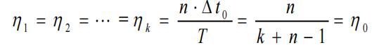
- 整个流水线的效率：
- 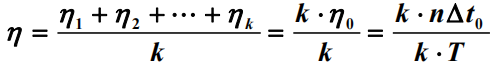
- 对于线性流水且每段经过时间相等时，流水线的效率正比于吞吐率
- 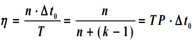
- 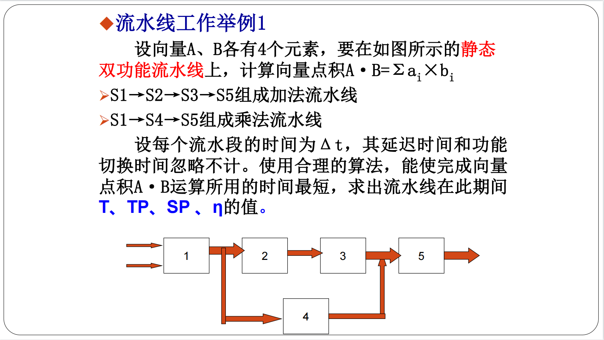
- 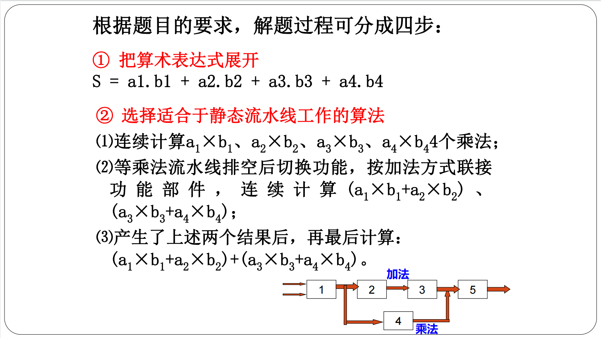
- 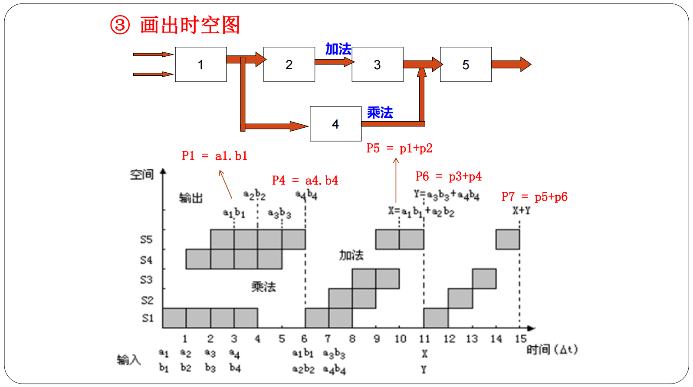
- 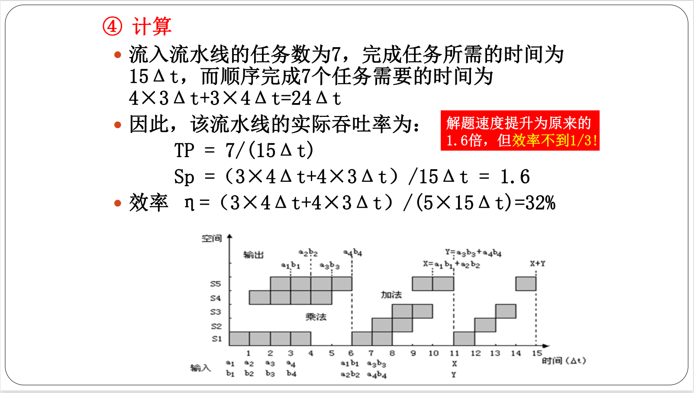
流水线的相关处理（选择、填空）
- 局部性相关（数据相关）：指令相关、主存数相关和寄存器组数相关（先写后读）
- 处理：
- 推后对相关单元的读
- 问题：吞吐率、效率低
- 设置相关专用通路
- 推后对相关单元的读
- 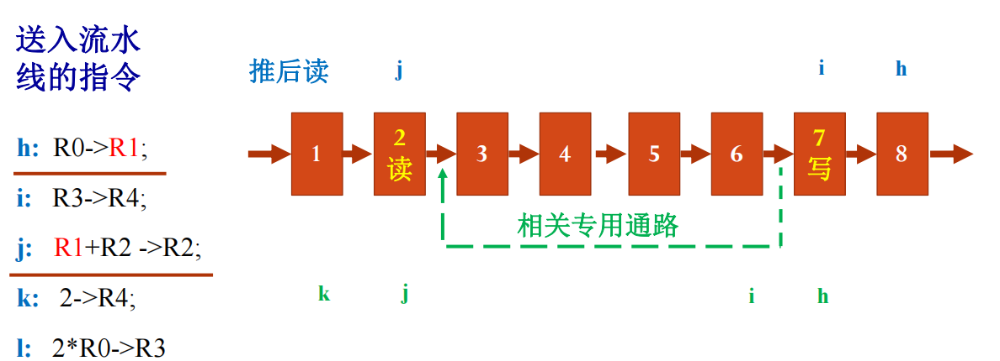
- 处理：
- 全局性相关（转移相关）：转移指令引起流水线中已被解释的指令作废
- 处理：
- 猜测法（分支预测技术）
- 猜测原则：猜概率高者，两者概率相近时，宜选不成功转移分支，因为它已预取进指缓
- 保证在猜错时可恢复现场
- 恢复方法：
- 对猜测指令的解释只完成译码和准备好操作数，在转移条件码出现前不执行运算；
- 对猜测指令的解释可完成到运算完毕，但不送回运算结果；
- 对猜测指令不加区别地全部解释完，但需把可能被破坏的原始状态都用后援寄存器保存起来
- 恢复方法：
- 加快和提前形成条件码：加快单条指令内部条件码的形成，在一段程序内提前形成条件码
- 延迟转移技术：用软件方法将转移指令与其前面不相关的指令交换位置
- 加快短循环程序的处理：将长度小于指缓的循环程序一次性放入指缓，并暂停预取指令或循环出口端的条件转移指令恒猜循环分支。
- 猜测法（分支预测技术）
- 处理：
- 顺序/同步流动方式：任务流出流水线的顺序与流入顺序一致。
- 实质：推后读
- 异步流动方式：任务流出流水线的顺序与流入顺序不同。
- 可能出现的新相关：
- “写-写”相关：如：i，k指令都要写入同一单元，避免最终出现k先写入而i后写入
- “先读后写”相关：如：避免最终出现l的读操作落后于m的写操作。
- sum:采用总线式分布式控制管理，进一步优化处理标量流水处理机的局部相关问题
- 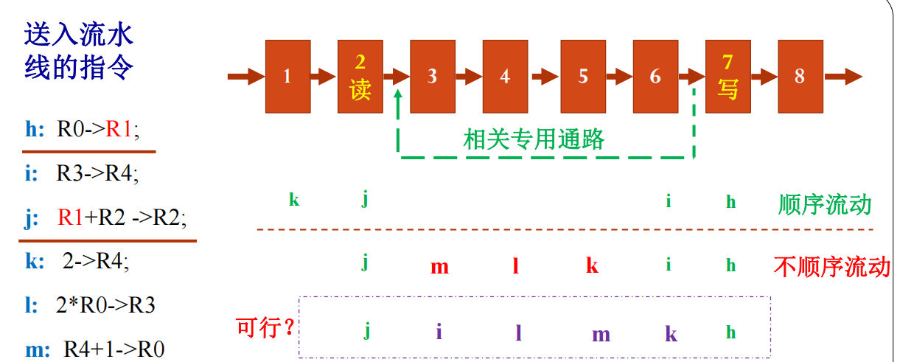
单功能非线性流水线的调度（简答）
- 启动距离：向一条流水线的输入端连续输入两个任务之间的时间间隔。
- 冲突：当以某一个启动距离向一条非线性流水线连续输入任务时，可能在某一个功能段，或某几个功能段中发生有几个任务同时争用同一个功能段的情况
- 主要目标：找出具有最小平均启动距离的启动循环（即最小的循环周期）
- 预约表 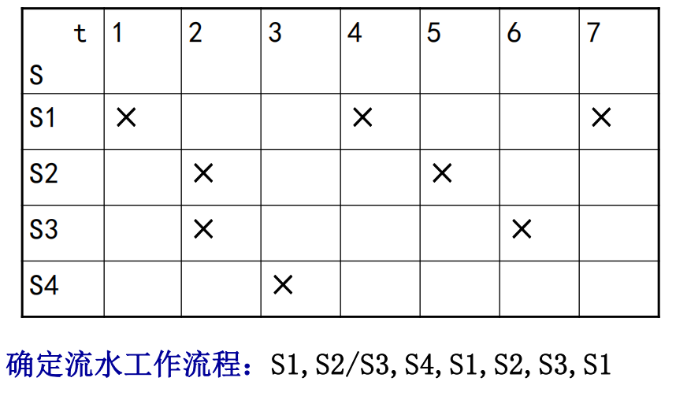
- 禁止启动距离：引起非线性流水线功能段冲突的启动距离
- 无冲突调度方法
- 根据预约表写出延迟禁止表F(预约表中所有同一行中任意两个“X”间的距离)
- 由延迟禁止表形成冲突向量C（冲突向量长度等于禁止向量中的最大值，由高到低）
- 由所有的向量图画出状态图（注意所有状态经过m*均可到达初始状态，m为禁止向量最大值）
- 由状态图形成最佳调度方案（所有闭合回路均为调度周期策略，找出其中平均启动距离最小的）
- 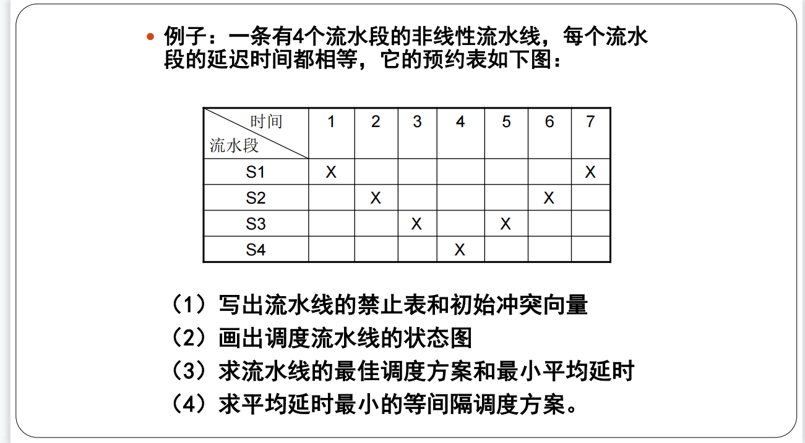
- 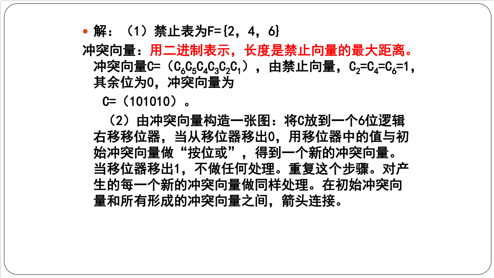
- 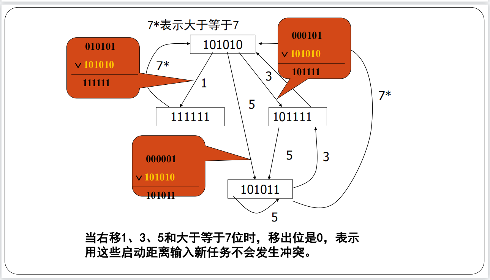
- 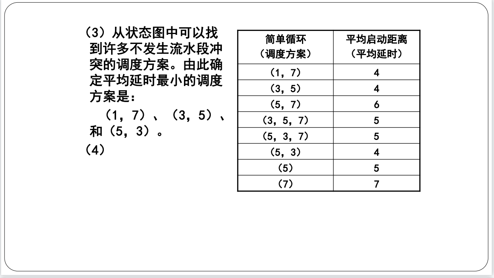
- 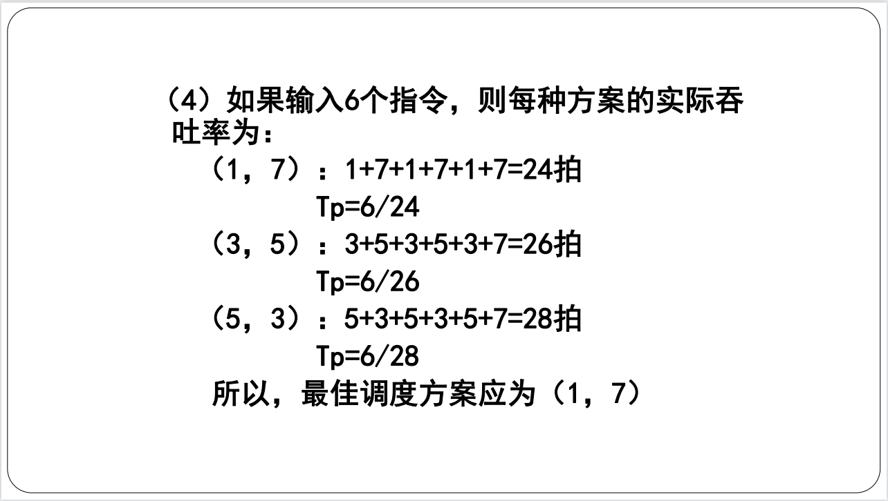
CH4 向量处理机
向量流水线的处理方式（选择、填空）；
- 横向加工：按组成的元素逐个进行计算
- 纵向加工：按操作步骤分段进行所有元素的操作（存储器—存储器结构）
- 纵横处理：对向量分组，组内纵向、组间横向处理（寄存器—寄存器结构）
向量处理机并行操作条件（选择、填空）及采用链接技术的条件（选择）；
- 并行操作的条件：
- 不存在向量寄存器使用冲突（不存在RAW，WAR，WAW，RAR相关）
- 不存在功能部件使用冲突（每种功能的部件一般只设置一个）
- 采用链接技术的条件：
- 不存在功能部件使用冲突
- 不存在向量使用冲突
- 共用向量寄存器中向量长度、起始地址、步长均相等
- 只有在先行指令产生第一结果分量的那个时钟方可链接，否则不行
阵列处理机的定义（选择）；
- 多个处理单元（PU）按照一定方式互连，在同一个控制单元（CU）控制下，对各自的数据完成同一条指令规定的操作。
- 分类
- 分部存储器
- 共享存储器
- 区别：
- ICN作用不同，分布式PE<->PE,集中式PE<->M
- 集中式共享存储器
- 分布式的每个PE自带存储模块（局部存储模块）
构成（选择）；
- 多个处理单元PE
- 多个存储模块M
- 一个控制器CU
- 一个互连网络ICN
- 一台输入输出处理及IOP
IlliacIV 阵列处理机结构特点（选择、填空）；
- 分布存储器
- 闭合螺线阵列
- 任意单元的最短距离不超过 步
- 处理单元通常为累加型运算器，把累加寄存器RGA中的数据和存储器中来的数据进行运算，结果保留在累加寄存器RGA中
互连网络的设计目标（选择、简答）；
- 结构不要复杂，降低成本；（低成本）
- 互连灵活，满足算法和应用的需要；（高灵活性）
- 处理单元间信息交换所需最大传送步数要尽量少，提高速度；（高连接度，低延迟）
- 互连网络采用规整单一的基本构件组成；模块化，可扩充性。（适合VLSI （超大规模集成电路））
应抉择的几个问题（选择、填空）；
- 操作方式：同步、异步、同步与异步组合。
- 控制方式：集中、分布。
- 交换方法：线路交换、包交换、线路交换与包交换组合。
- 拓扑结构：互连网络入、出端可以连接的模式，有静态和动态两种。
- 静态拓扑结构：两个节点间的链路是固定的
- 动态拓扑结构：通过制定网络的开关单元状态可以重新配置
- 单级、多级。
- 互连函数定义，二进制编码表示，N个节点的地址为
- （后三个为互连网络的主要操作特征）
操作方式（选择、填空）；
- 同步、异步、同步与异步组合。
单级互连网络及其函数（计算、选择）；
- 立方体单级网络：
- 最大连接度
- 节点最大间距
- PM2I单级网络：
- 效果：（+- 2i，取模）
- 最大连接度
- 节点最大间距
- 2n个互连函数，其中2n-1种不同，只有一种函数可逆，当i=n-1时
- 可逆的定义：输入、输出的位置可互换
- 混洗交换单级网络：
- 效果：循环左移
- 节点最大间距
- 蝶形单级网络：
- 效果：首尾交换
多级互连网络的几个关键技术（选择、填空）；
- 交换开关
- 交换开关之间的拓扑连接
- 对交换开关的不同控制方式
交换开关分类、控制方式（选择、填空）；
- 4种开关状态或连接方式：
- 直连
- 交换
- 上播
- 下播
- 3种控制方式：
- 级控制：同一级的所有开关只用一个控制信号控制，同时只能处于同一种控制状态。
- STARAN交换网
- 单元控制：每一个开关都用自己独立的控制信号控制，可各自处于不同的状态
- 多级混洗交换（omega）网络
- 部分级控制：第 i 级有 i+1 种控制信号
- STARAN移数网
- 级控制：同一级的所有开关只用一个控制信号控制，同时只能处于同一种控制状态。
STARAN 交换网络的交换函数和互连函数、控制信号（计算、分析）；
- 靠近输入端为小级
- 对于第i级和第i+1级之间，把个开关分为一组，组内采用蝶式变换
- 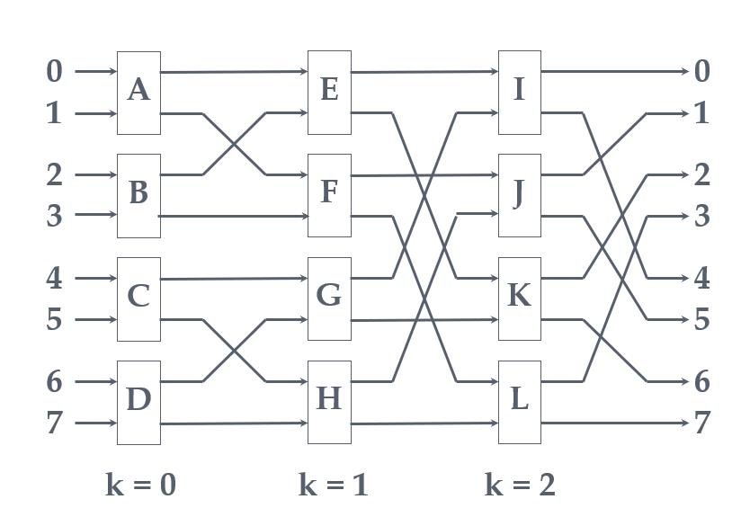
- 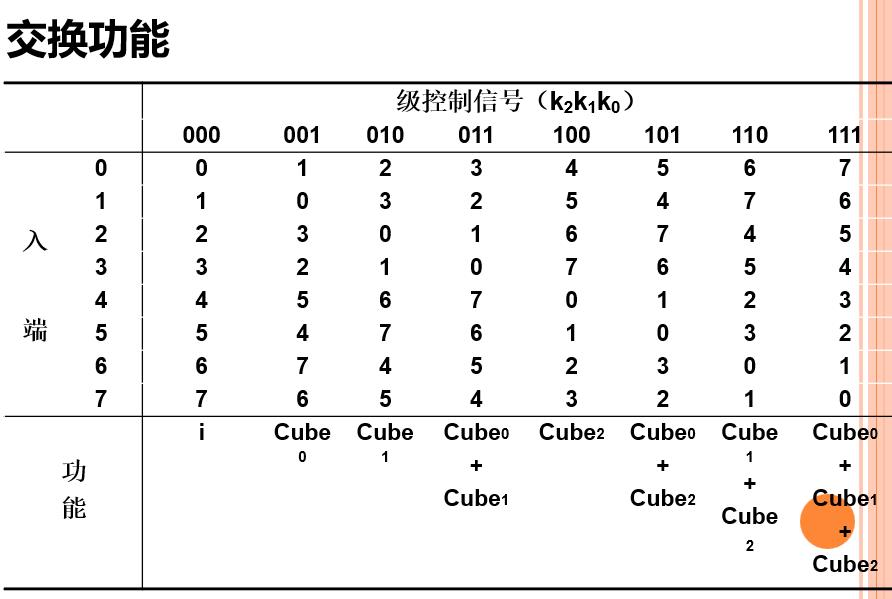
STARAN 移数网络的控制方式（填空 、选择）；
- 控制方式：部分级控制
多级混洗交换网络的交换开关 、控制方式 、拓扑结构（填空 、选择）；
- 交换开关：四功能（允许实现一对多的连接）
- 控制方式：单元控制
- 拓扑结构：不同级相同，均为全混洗结构
- 连接图：第n-1级靠近入端
并行存储器的无冲突访问（计算、选择、填空）
- 采用多体交叉存储器--增加MEM带宽
- 对向量分组操作--解决MEM带宽小于向量带宽问
- 选择适当的存储体数m——达到无冲突访问（冗余）
- 一维向量：顺序存放，防止步长与m成比例（m取质数且与步长互质）
- 多维向量：错位存放，满足行、列、对角线等方式访问；
- 当 m 大于每次访问向量元素个数时，，
- ，同一列不同行错开距离
- ，同一行不同列错开距离
- 对，体号： j=(aσ1+bσ2+C) mod m 体内序号：i=a
- 当向量元素不固定，或非n×n时
- 存储体数为质数，将向量变换成一维数组 S，再对 S 进行处理
- 当 m 大于每次访问向量元素个数时，，
CH5 多处理机
多处理机耦合度（填空）；
- 紧耦合多处理机
- 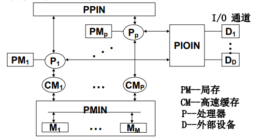
- 特点：通过共享主存实现机间通讯。
- 互连网络：实现PE←→PEM、PE←→I/O通道、PE←→中断信号间的连接。
- 系统属性：
- 同构/异构--PE类型相同/不同；
- 对称/非对称--每个PE与部分/全部的I/O通道连接。
- 常见结构：同构对称式和异构非对称式多机系统。
- 限制：PE数量不能很多。为什么？
- 主存带宽、IN带宽、同步开销限制了PE的数量。
- 访存冲突解决方案：
- 采取多体交叉访问方式，增加PEM数量；
- 每个PE自带小容量局部存储器，存放核心代码、OS 表格等，减少 PE 访存次数；
- 每个 PE 自带一个 Cache，减少 PE 访存次数。
- 松耦合多处理机
- 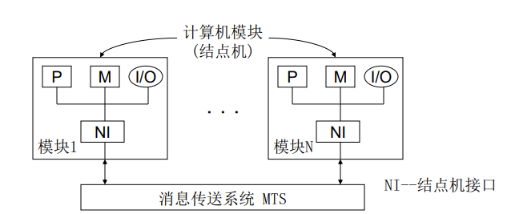
- 每台处理机都有一个容量较大的局部存储器；不同处理机间可通过通道互连或 MTS 实现通信。
- 松耦合多处理机较适合做粗粒度的并行计算。作业可被分为若干个相对独立的任务，任务间信息流量较少，则可在多个处理机上并行执行，即松耦合度的多处理机系统有效。
- 特点：通过消息传送系统实现机间通讯；每个模块是一个独立的处理机，整个系统可看成是一个分布系统。
- 互连网络：MTS有总线、环形、多级网络等种类；
- 结构：有层次和非层次两种结构
多处理机定义以及硬件结构；（硬件结构没找到）
- 定义：多处理机系统机是指有两台以上的处理机，共享 I/O 子系统，机间经共享主存或高速通信网络通信，在操作系统控制下，协同求解大而复杂问题的计算机系统。
- 作业、任务级并行的 MIMD 计算机，采用资源共享途径实现并行
- 硬件结构：
- 紧耦合与松耦合
- 机间互连形式
- 总线形式
- 环形互连形式
- 交叉开关形式
- 存储器的组织
- 低位交叉
- 高位交叉
机间互连形式及采用算法（选择、填空）；
- 总线形式 （时间分配）
- PE、PEM、I/O通道均连在总线上，采用分时或多路转换技术实现数据传递，是最简单的连接方式。
- 总线仲裁算法：静态优先级算法、平等算法、动态优先级算法、先来先服务算法等。
- 对外设一般采用优先级算法；对PE采用均等算法。
- 实现方法：
- 集中式：由总线控制器控制；
- 分布式：中机构分散到各PE中。
- 提高总线效率方法：改善传输介质和增加总线数量。
- 总线互连方式不适宜连接过多的处理机。
- 环形互连形式
- 为保持总线式互连的优点，同时又能克服其不足，可以考虑构造一种逻辑总线，让各台处理机之间点点相连成环状，称环形互连，
- 交叉开关形式 （空间分配）
- 是总线形式的极端，总线数=PE数+PEM数+I/O通道数，是一种全相联形式，控制、仲裁、转换机构均在开关中。
- 改进：用一系列较小开关串联或并联，形成多级交叉开关，减少其复杂性。交叉开关方式不适宜连接过多的处理机。
- 多端口存储器形式
- 将控制、仲裁、转换机构移到存储器中。
- 每个端口与一个PE或I/O通道相连。
- 多端口存储器形式不适宜连接过多的处理机
多处理机的存储器组织中两种编址方式及其适应场合（简答、选择）；
- 由 m 个存储器模块构成的并行存储器，存储单元的地址是按交叉方式编址的。这种地址交叉编址的方式主要有低位交叉和高位交叉两种。
- 低位交叉编址：块内顺序物理地址不连续，距离为 m。（即低位不变）
- 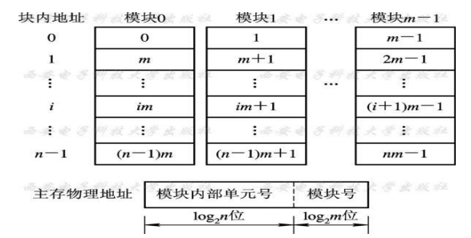
- 低位交叉编址方式下，连续物理地址空间的数据被分散到各个分存储体中；
- 适用于当前执行的多个进程基本共享数据的情况，空间中的数据，如流水线、向量或阵列处理机
- 高位交叉编址：块内顺序物理地址连续，总体也依次连续分布（即高位不变）
- 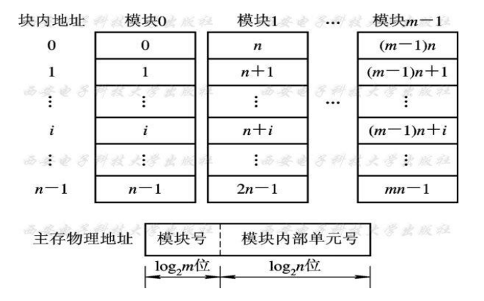
- 适用于当前执行进程是不共享同一集中连续物理地址，可将存储模块中的一定数量的页面分配给某进程
- 将放置处理机 i 执行进程要用到的绝大多数页面的那个存储器模块 i 称为是处理机 i 的本地存储器
- 低位交叉编址：块内顺序物理地址不连续，距离为 m。（即低位不变）
多处理机的 cache 一致性问题（选择、填空）；
- 保证同一数据块在不同Cache以及主存中的多个副本的一致性。
- 共享可写数据引起不一致性
- 进程迁移引起数据不一致性
- I/O 传输造成的数据不一致性
- 如果一个存储器满足以下 3 点，则称该存储器是一致的。
- 处理器 P 对单元 X 进行一次写之后又对单元 X 进行读，读和写之间没有其他处理器对单元 X 进行写，则 P 读到的值总是前面写进去的值。
- 处理器 P 对单元 X 进行写之后，另一处理器 Q 对单元 X 进行读，读和写之间没有其他写，则 Q 读到的值应该是 P 写进去的值。
- 对同一单元的写是顺序化的，即任意两个处理器对同一单元的两次写，从各个处理器的角度看顺序都是相同的。
- 解决的方法
- 解决进程迁移引起的 Cache 不一致性
- 禁止迁移
- 触发写回主存
- 进程挂起时，将该进程改写过的块写回主存
- 以硬件为基础实现多 Cache 一致性（关键：跟踪记录共享数据块的状态）
- 监视/监听法（Snoopying）
- 适用结构：总线型互连的多处理机
- 基本思想：利用总线播送更改主存的情况，各个Cache控制器通过监听总线来判断它们是否有总线上请求的数据块。
- 实现方式：
- 写作废协议
- 当一个处理器第一次对某数据项进行写入时，通过广播使其他Cache中所有对应该数据项的副本作废。
- 写更新协议
- 当一个处理器对某数据项进行写入时，通过广播使其他Cache中所有对应于该数据项的副本进行更新。
- 写作废协议
- 目录表法（Directory）
- 目录：一种专用的数据结构，用于记录可以进入 Cache 的每个数据块的状态、哪些处理器有该块的副本以及是否修改过等信息。
- 适用结构：非总线型互连的多处理机
- 基本思想：根据目录表，一个处理机在写入自身 Cache 的同时，只需有选择地通知其他存有此数据块的 Cache 将副本作废或更新。
- 全映像目录表
- 有限目录表法
- 链式目录表法
- 监视/监听法（Snoopying）
- 以软件为基础实现多 Cache 一致性
- 基本思想：不允许要共享的可写数据进入 Cache
- 任意时刻均不允许共享的可写数据进入 Cache，只留在主存中
- 通过编译分析后，只在实际有写入操作会影响一致性的时间内不允许进入主存
- 基本思想：不允许要共享的可写数据进入 Cache
- 解决进程迁移引起的 Cache 不一致性
表达式的树形流程图（会画图并计算）；
- 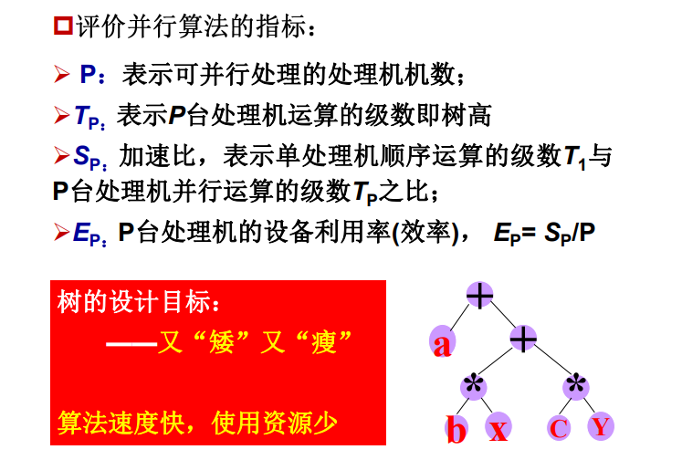
程序并行性分析（选择、填空）；
- 多处理机系统中，程序段并行必然是“异步流动”。
- 数据相关
- 如果Pi的左部变量在Pj的右部变量集内，且 Pj 必须取出 Pi 运算的结果来作为操作数，就称 Pj “数据相关”于 Pi。
- 如：Pi:A=B+D, Pj:C=A*E
- 当 Pi 和 Pj 服从交换律时，虽不能并行执行，但可以交换串行 Pi：A=2*A，Pj:A=3*A
- 相当于流水线中发生的“先写后读”相关
- 数据反相关
- 如果Pj的左部变量在Pi的右部变量集内，且当Pi未取用其变量的值之前，是不允被Pj所改变的，就称Pi“数据反相关”于Pj 。
- 如：Pi:C=A+E, Pj:A=B+D
- 相当于流水线中发生的“先读后写”相关
- 数据输出相关
- 如果Pi的左部变量也是Pj的左部变量，且Pj存入其算得的值必须在Pi存入之后，则称Pj“数据输出相关”于Pi。
- 如 Pi:A=B+D, Pj:A=C+E
- 相当于流水线中发生的“写-写”相关
- 其他相关
- 若两个程序段的输入变量互为输出变量，同时具有“先写后读”和“先读后写”两种相关，以交换数据为目的，则两者必须并行执行，既不能顺序串行， 也不能交换串行。
- 如：Pi: A=B, Pj: B=A
- 并行执行，且必须保证读、写完全同步。
多处理机 相较于 阵列处理机
- 并行性级别：作业、任务级，更高
- 硬件结构 ：多个处理器要用多个指令部件控制
- 算法实现 ：进一步挖掘更多隐含的并行性
- 系统管理 ：更多依靠操作系统等软件手段
FORK、JOIN 语句（选择）；
- Fork m
- 派生：在一个任务执行的同时，产生出一个或多个与它并行的任务，分配给不同的、正在等待的处理机完成。
- Join N
- 汇合：把分散在各处理机执行的任务，全部完成后，再汇合起来，进入后续任务。
多处理机上并行执行的程序及时间资源图（设计程序并画图）；
- 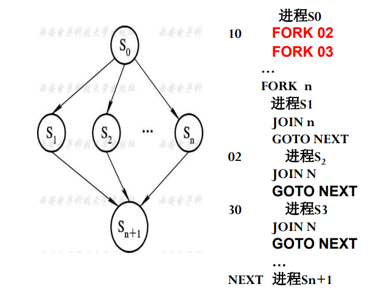
- 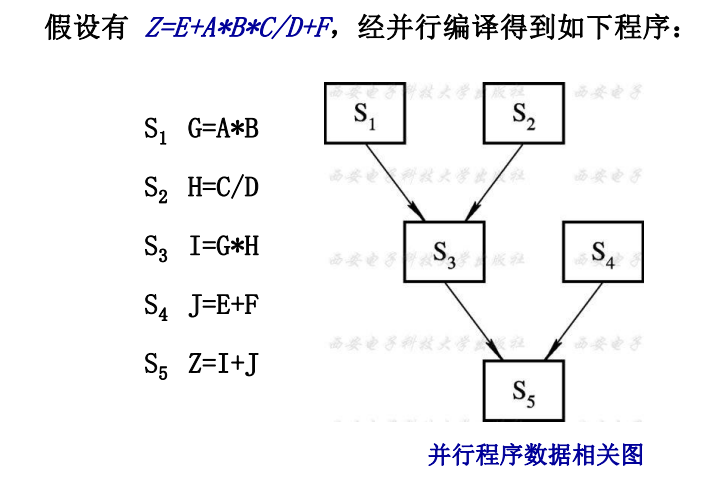
- 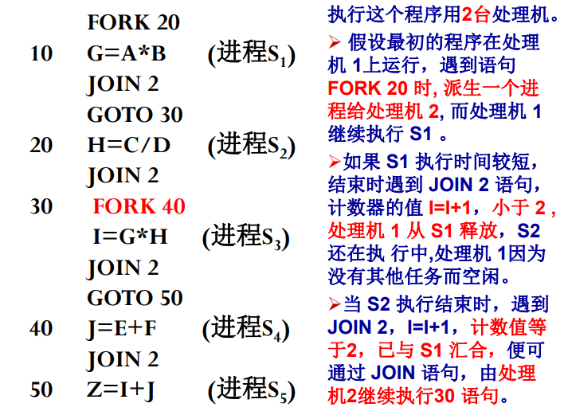
- GOTO 在时间资源图上一定要有表示！！！
多处理机的操作系统分类（选择、填空）；
- 主从型操作系统
- 有一台主处理机上运行操作系统，其他的处理机为从处理机，由主处理机管理从处理机的进程和分配任务。
- 一台从处理机在执行进程的过程中需要得到管理程序提供服务时，必须向主处理机发生申请，等待主处理机响应后对它提供服务。
- 各自独立型操作系统
- 每台处理机都有一个独立的管理程序（操作系统的内核）在运行，即每个处理机都有一个内核的副本，执行各种管理功能。
- 浮动管理控制方式
- 浮动型操作系统是界于主从型和单独型之间的一种折衷方式，其管理程序可以在处理机之间浮动。担任“主控制处理机” 的设备不固定、担任的时间不固定。
CH6 数据流机
控制驱动的控制流方式的特点（选择）；
- 通过访问共享存储单元让数据在指令之间传递；
- 指令执行的顺序性隐含于控制流中，但却可以显示使用专门的控制操作符来实现并行处理；
- 指令执行的顺序受程序计数器控制，即控制令牌所支配。
数据驱动方式及其特点（简答、选择）；
- 数据驱动的数据流方式：只要一条或一组指令所要求的操作数全部准备就绪，就可立即激发相应的指令或指令组执行。执行结果的输出将送往等待这一数据的下一条或下一组指令。
- 特点：
- 它没有通常的共享变量的概念，即没有共享存储数据的概念；
- 指令执行顺序只受指令中数据相关性的制约；
- 数据是以数据令牌方式直接在指令之间传递的
- 特性：
- 并行性：可同时并行执行多条指令（并行性通常是隐含的）。
- 异步性：一旦一条指令所需求的数据令牌到达后，指令就可独立执行，而不必关心其他指令及数据情况如何。
- 函数性：运算的执行都是局部操作，操作数是作为数据令牌直接传送的，每一组数据流操作都需要一组输入值，产生一组输出值.
- 分散性：不需要控制执行次序，故不需要集中控制。
数据令牌的概念（简答）；
- 实质上是一种表示某一操作数或参数已准备就绪的标志。
- 一旦执行某一操作的所有操作数令牌都到齐，则标志着这一操作是什么操作，以及操作结果所得出的数据令牌应发送到哪些等待此数据令牌的操作的第几个操作数部件等有关信息，都将作为一个消息包(MessagePacket)，传送到处理单元或操作部件并予以执行。
数据流是一种什么样的计算模型（简答、填空）；
- 从语义上说，数据流是基于异步性和函数性的一种计算模型。
- 异步性：一旦一条指令所需求的数据令牌到达后，指令就可独立执行，而不必关心其他指令及数据情况如何。
- 函数性：运算的执行都是局部操作，操作数是作为数据令牌直接传送的，每一组数据流操作都需要一组输入值，产生一组输出值。
数据流计算模型分类（填空）；
- 数据驱动计算。
- 其操作按输入数据可用性决定的次序进行。
- 需求驱动计算。
- 其操作则按数据需求决定的次序进行。
数据流计算机的机器语言的两种表示方法（填空）；
- 数据流计算机的机器语言即数据流程序图。
- 有向图表示法。
- 有向图由有限个结点集合与连接结点的单向分支线组成
- 活动模片表示法。
- 一个活动模片相当于有向图表示中的一个或多个操作节点。数据流则是一组活动模片的集合体。
- 一个活动模片 1 个操作码域、2 个操作数域和 1 个目的域；其实质相当于是一条指令。
两种数据流计算机结构的特点（选择、填空）。
- 根据对数据令牌的不同处理方式，数据流计算机有两种结构。
- 静态数据流计算机: 任意一个节拍内，任意一条有向分支线上只允许存在一个数据令牌的处理方式, 故数据令牌不加标号。
- 动态数据流计算机: 任意一条有向线上可同时传送几个数据令牌，故每个数据令牌都必须带上标志（令牌标号及其他特征信息）。